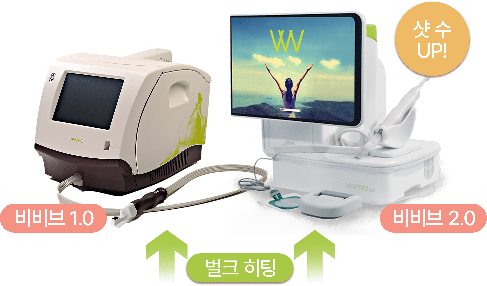
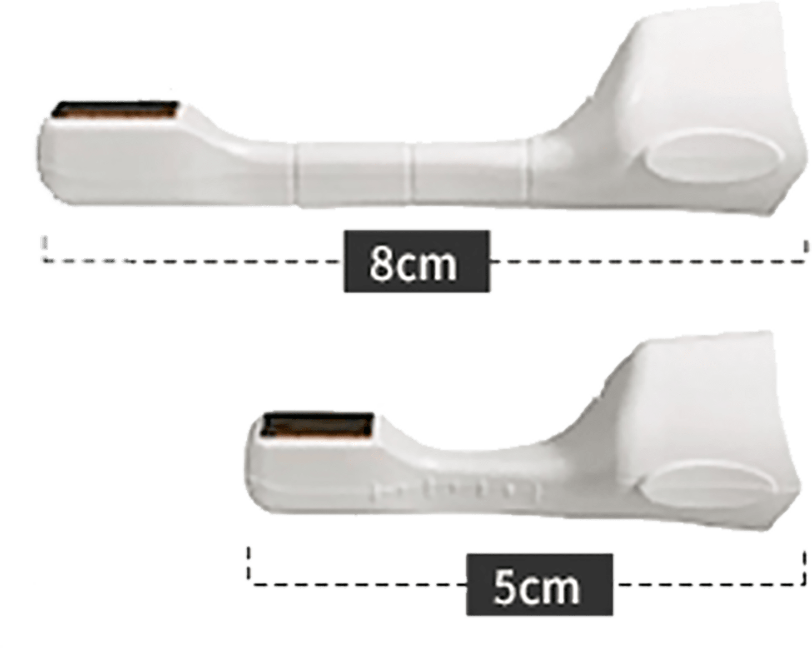
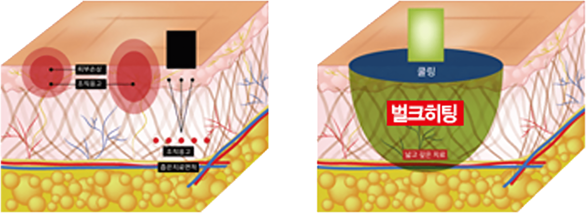
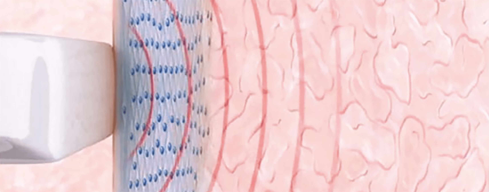
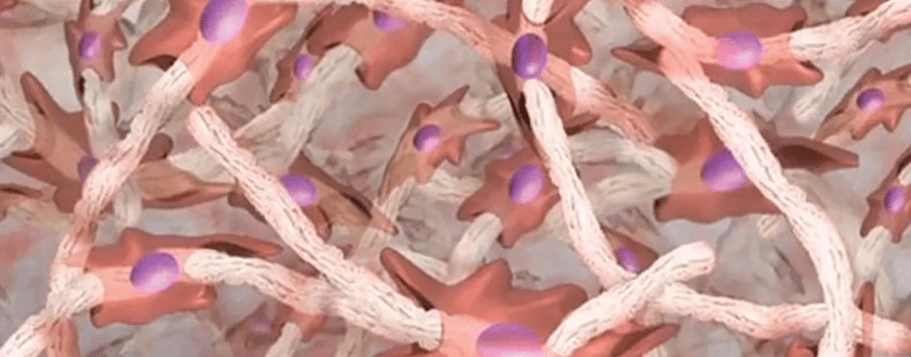
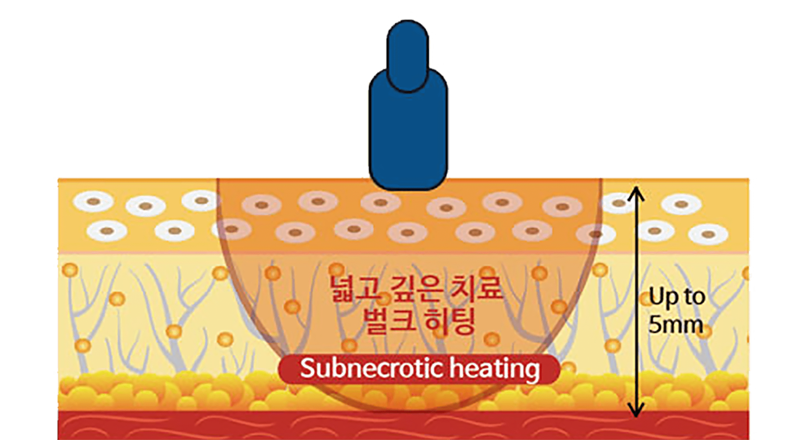
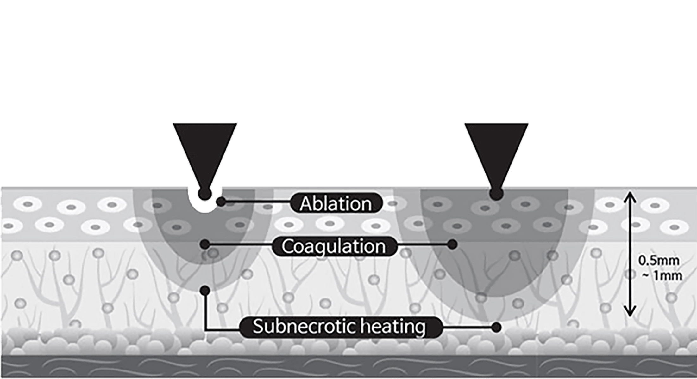
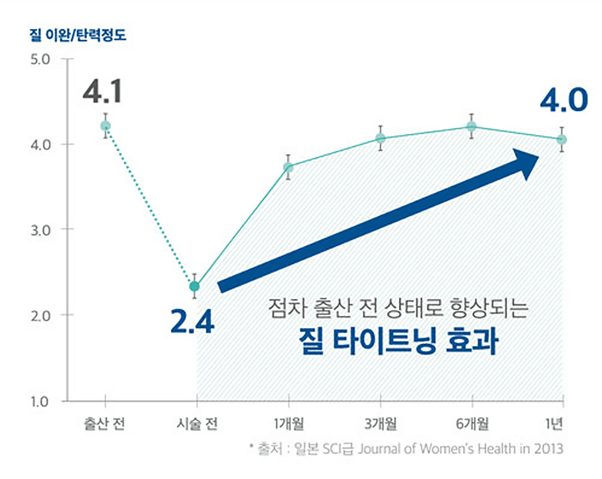
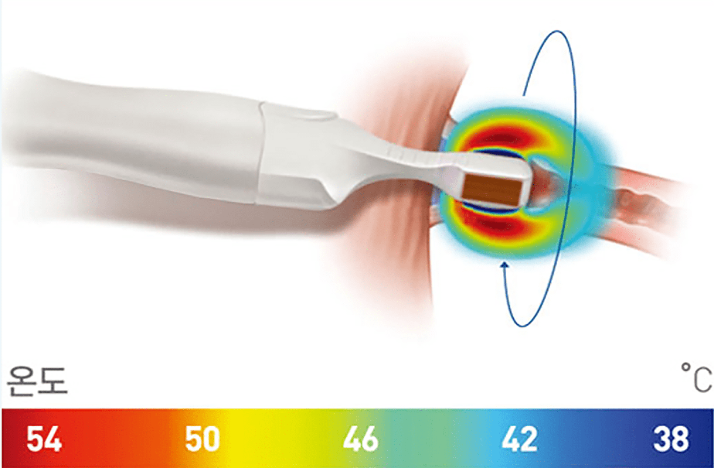

나를 위한
비비브 질 타이트닝
나를위한 산부인과의
“비비브 질 타이트닝”
은
의료진의 노하우와 기술력으로
FDA 승인을 받은 순정 비비브 기기를
이용하여 수술 없이 강력한 콜라겐 재생으로
드라마틱한 질 타이트닝
효과를 볼 수 있는 시술입니다
- 시술시간 30분 내외
- 회복기간 없음
- 입원여부 없음
-
마취방법
없음
(수면마취 가능)
비비브 8cm 팁
‘250, 350샷’ 으로


넓고 깊은 벌크 히팅

- 기존 시술 방법
- 비비브 만의 기술력
비비브란?

 비비브
비비브
비비드는 피부 리프팅 레이저 장비로 잘 알려진
써마지 기술로 만들어진 질 이완증 치료 장비입니다.
열에너지를 이용해 질 내부 콜라겐 생성을 촉진시켜
단 1회만으로도 질 벽의 쿠션감을 생성
하고
늘어진 근육을 당겨줍니다.
또한 클리토리스와 바로 연결되어 있는질 안쪽 입구
조직에
시술하여 원활한 혈액 순환을 촉진하고
클리토리스를 자극해 마찰감을 향상하고
전 세계에서
성감 증대 효과를 인정받고 있는
시술
입니다.
전 세계 65개국 100만명
여성이 선택한 확실한 효과
비수술적 질 이완증 치료로
안정성과 효과를 모두 입증받은 비비브
비비브 시술 원리
질 탄력이 강화되는 90일의 변화
-
01 고온의 에너지
조사,
질 표면
점막 조직 자극
탐폰보다 작은 비비브 팁을 질 입구 점막에 넣고
고르게 조사합니다.
쿨링과 히팅 듀얼 기능으로
질 표면은 차갑게 보호하면서 질 점막 깊은 곳에
고온의 모노폴라를 넓고 고르게 조사하여
새로운 콜라겐 생성을 촉진합니다. -
02 치료 30일 후,
콜라겐 생성으로
질벽이 차오름
고온의 에너지가 질 점막아래를 자극시켜 세포를
활성하시키고 콜라겐을
생성해 자연스러운 재생
과정이 지속적, 즉각적으로 일어납니다. -
03 통통하게 차오른
질벽과 질 근육
강화
질 콜라겐의 복구 과정은 시술 후 3~6개월까지
계속되며 질 내부가
좁아지고 질 근육은 탄력있게
강화됩니다.
기존 레이저와의 차이점
- 비비브
- 짧음
- 필요 없음
-
1회
(모노폴라를
이용한 시술) -
약 3일 정도의
휴식 후 - 통증 없이 바로 가능
- 시술 시간
- 마취 여부
-
시술 횟수
및 특징 - 부부 관계
- 일상생활
- 기존 레이저
- 1 시간
- 수면마취
-
3~4회 (2~3주 간격)
레이저 이용 - 1~2주 이상 불가능
-
시술 후 통증, 출혈 발생,
분비물 증가 등

비비브 만의 기술력
기존 시술 방법비비브 타이트닝 효과
수술 없이 향상되는 질 타이트닝효과

효과는 빠르면 시술 1~2주 후부터 느껴지고 일반적으로는
시술 한달 이후부터 확실하게 확인할 수 있습니다.
3~6개월에걸쳐 지속적으로 질 타이트닝 효과가 달라진
성감을 직접 체감할 수 있으며 1년 이상 장기적으로 유지됩니다.
뜨겁지 않게 통증 없이
비비브 만의 쿨링 시스템
마취 크림 없이 시술이 진행되며
따뜻한 느낌을 느끼는 정도입니다.

질 입구에 탐폰보다도 작은 비비브 팁을 삽입하여 고온의
모노폴라를 질 점막 깊은곳에 넓고 고르게 조사합니다.
이때 냉매가 분사되어 질 표면을 차갑게 보호해주기 때문에
고온의 에너지는 질 점막에 넓고 깊게 히팅하지만, 실제로는
따뜻한 열감이 느껴질 뿐입니다.
히팅된 질 점막은 1~3개월에 걸쳐 콜라겐 재생 반응이 일어나며
질 점막이 통통하게 차올라 늘어진 질 내부를 좁혀주고 질 근육의
탄력을 강화합니다.
비비브의 장점
-
단 1번의 시술로
강력한 질 타이트닝 비비브 시술은 단 1회
30분 정도의 짧은 시술로도
만족스러운 효과를 경험할 수 있습니다. -
흉터 및 통증 최소화
비비브 시술은 비수술, 비절개 시술로
출혈과 통증이 적어
마취나
약물 복용 없이 시술로 가능합니다. -
안전한 시술
부작용이 거의 없는 시술로
풍부한 경험과 노하우의
산부인과
전문의 여의사가 시술합니다. -
빠른 회복
시술 후 바로 일상생활이
가능합니다.
여성 질환 예방 / 불감 해소 / 건조증 개선 / 질 타이트닝
빠르고 간편한 시술 / 지속적인 효과 / 성감 극대화
비비브 대상자
-
수술 없이 간단한 시술로
만족스러운 효과를 원하시는 분 -
질이 넓고 느슨해져
질 탄력에 대해 고민이 많으신 분 -
출산 후 성적 만족도가 떨어져
개선을 원하시는 분 -
기존 레이저 질 축소술로
효과를 느끼지 못하신 분 -
질 탄력과 성감에 대해 고민이 있으신 분
-
시간적 여유가 없어 빠른 시술을 원하시는 분
비비브 효과
-
분만 후 요실금 개선
분만 후 요실금이란?
출산을 할때 질 근육이 늘어남에 따라
자신의 의지와 무관하게 소변을 보게 되는 현상.
질 입구 조직에 부드럽게 열을 가해 질의 탄성을 복원하고
방광 주변 근육을 강화해 요실금 개선. -
성 교통 개선
성 교통이란?
건조한 질 때문에 관계를 할 때 통증을 느끼는 현상.
자연스럽게 콜라겐을 재생해 건조한 질벽을
촉촉하게 해줘 성교통 개선. -
질 건조증 개선
질 건조증이란?
평소 애액을 분비하는 질 점막의 두께가 얇아져
분비물이 충분하지 않아 건조해지는 현상.
콜라겐 재생 으로 질 벽이 촉촉하고 탱탱해져 질 건조증 개선.
비비브는 왜
나를위한 산부인과?


-
산부인과 전문의
여 원장님의 세심하고
편안한 상담 -
남모를 고민을
디테일한 부분까지
상담 후 종합적으로
분석 -
현재의 상황과
심리적인 부분까지
모두 고려한
맞춤 치료
질 축소술은 미용적인 측면부터 기능적인 측면까지 고려해야
하기에
풍부한 경험과 지식을 겸비한 산부인과 전문의에게 시술받는 것이
좋습니다.
비비브는 왜
나를위한 산부인과?
-
산부인과 전문의
여 원장님의
세심하고
편안한 상담 -
남모를 고민을
디테일한 부분까지
상담 후 종합적으로
분석 -
현재의 상황과
심리적인
부분까지
모두 고려한
맞춤 치료
질 축소술은 미용적인 측면부터 기능적인 측면까지
고려해야 하기에 풍부한 경험과 지식을 겸비한
산부인과 전문의에게 시술받는 것이 좋습니다.
Q & A
-
치료 효과는 얼마나 유지되나요?
환자에 따라 다르지만 외국임상을 통해 시술
1년 후에도
약 80%의 효과가 유지되는 것을
확인할 수 있습니다. -
많이 아픈가요?
마취가 따로 필요없고 보통 따뜻한 느낌을 느낍니다.
-
시술 후 일상 복귀는 얼마나 걸리나요?
시술 후 바로 일상 복귀가 가능합니다.
-
시술은 몇 회를 받아야 하나요?
1회 만으로도 출산 전 질 상태로 돌아갈 수 있습니다.
질 이완 진단기
를 통한
질압측정

나를위한 산부인과에서는 비비브 질타이트닝,
질 축소술, 질 필러 시술 등에 질압측정을 통한
비교 데이터를 제공해 드리고 있습니다.

프라이빗한 휴식 과 회복
나를위한산부인과에서는 치료를 받는
환자분들이
긴장을 완화하고 편안한
마음으로 쉬실 수 있도록
고급스럽고
편안한 분위기의 1인 회복실을 제공합니다.
레이저 질 타이트닝
시술 후 주의사항
시술 후 주의 사항은 개인 차가 있을 수 있습니다.
-
01
시술 직후 요도 및 점막 조직 자극으로 인한 빈뇨 증상이 일시적으로
생길 수 있습니다.
1주일 내로 자연스럽게 사라지는 증상이오니
걱정하지 마세요. -
02
시술 후 통증이 거의 없어 바로 일상생활이 가능하며, 운동도
제한 없이 하실 수 있습니다. -
03
성관계는 시술 후 바로 가능하지만, 하복부 불편감 혹은 소량의
출혈이 발생할 경우 3일 정도 관계를 피해주세요. -
04
시술 당일 사워, 탕 목욕 및 사우나는 바로 가능입니다.
-
05
점막의 위축이 심할 경우 시술 후 소량의 출혈이 생길 수 있으며,
이러한 증상이 있을 시 본원으로 연락 후
바로 내원하시어 경과를
보시기를 권장 드립니다. -
06
시술 후 음주, 흡연은 시술 결과에 악영향을 끼칠 수 있으니
피해주세요. -
07
시술 후 1주일간 탐폰, 음주, 탕 목욕, 자전거 운동과 같이 시술 부위를
자극할 수 있는 행위는 피해주시고
흡연과 음주는 안정적인 필러
안착을 위해 삼가해주세요.